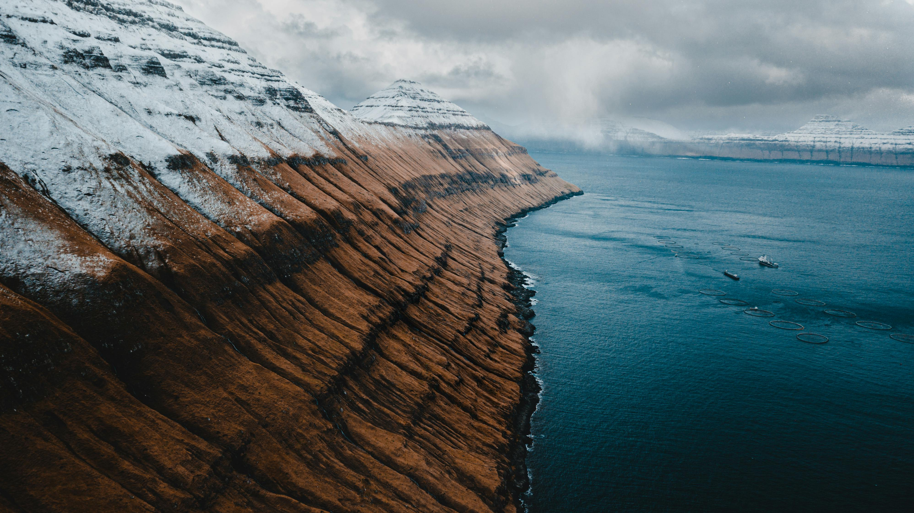
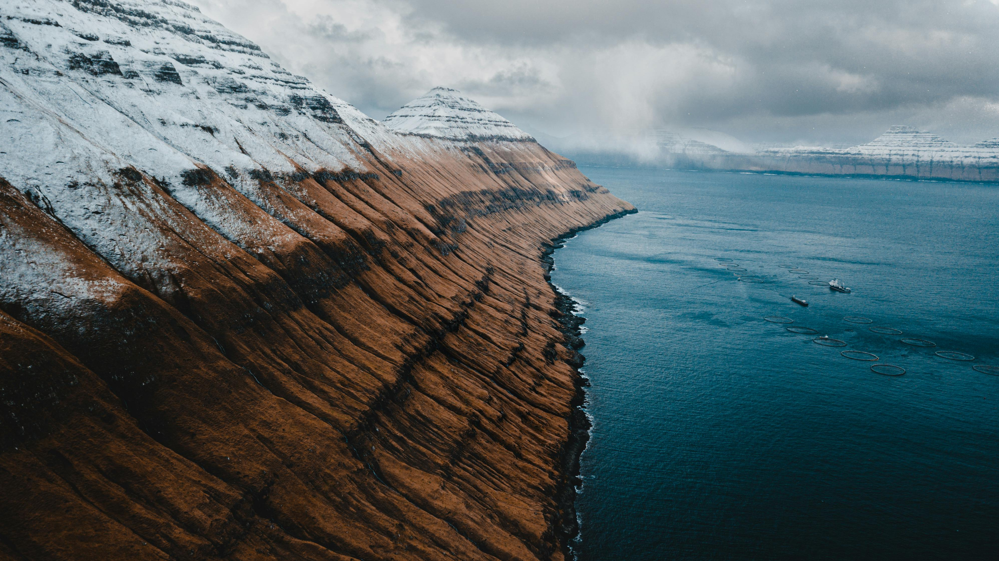

Why Faroe Islands?
TOURISM STRATEGY 2030
The new strategy is setting out the direction of travel and our goals for Faroese tourism over the coming years. It’s the result of thousands of conversations, hundreds of meetings, and masses of inspiration from our international colleagues. A revolutionary ‘bottom-up’ strategy was applied, the first of its kind to be done in the tourism sector worldwide.


 
